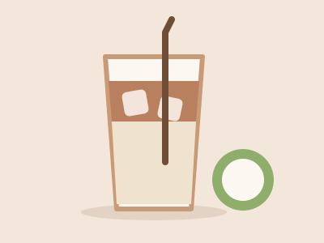
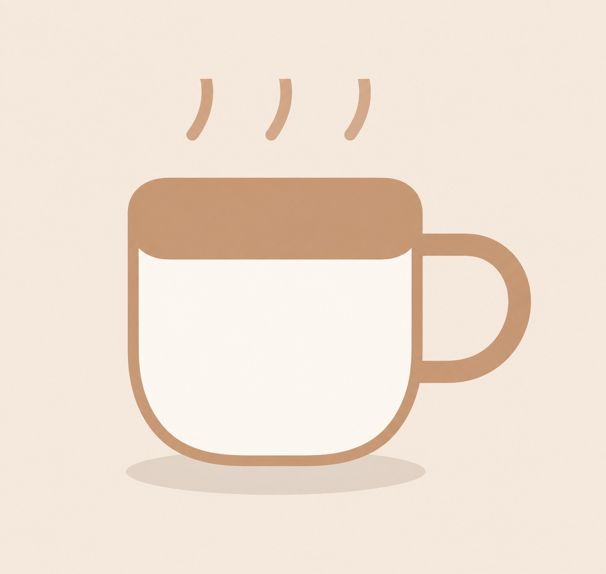
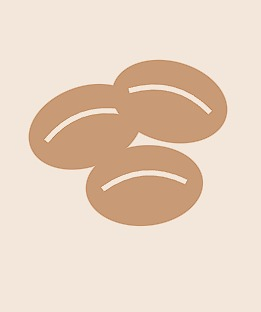

Dingin
Es Kopi Kelapa
Espresso segar berpadu dengan air kelapa muda asli dan sedikit gula aren.
Rp 22.000
Sejak 2019 - Diracik di Rumah, Disajikan dengan Hati
Kopi Nusantara menghadirkan biji kopi pilihan dari pelosok Indonesia, diseduh langsung setiap hari tanpa bahan pengawet. Nikmati dari layar HP, tablet, atau laptop Anda - tampilan kami menyesuaikan di mana pun Anda membuka halaman ini.


Berawal dari dapur rumahan di tahun 2019, Kopi Nusantara tumbuh dari kecintaan terhadap biji kopi lokal Indonesia - dari Gayo, Toraja, hingga Kintamani. Kami percaya secangkir kopi terbaik lahir dari proses yang jujur dan bahan yang berkualitas.
Klik salah satu pertanyaan untuk melihat jawabannya.
Isi formulir berikut, tim kami akan segera menghubungi Anda kembali.
Alamat: Jl. Melati No. 12, Bandung
WhatsApp: 0812-3456-7890
Jam Buka: Setiap hari, 08.00 - 21.00